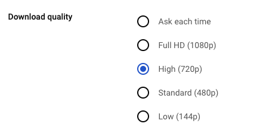

Spring 2024

Radio Buttons Redesign
A case study examining YouTube's video quality selector, analyzing its accessibility pitfalls and proposing an improved design.
Case Study
Accessibility
UI Components